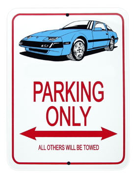

-
I'm getting a little clutch slippage here in there not to bad but it is happening. So I plan on getting a stage 2 [Drag] clutch from South Bend Clutch {$395} just to upgrade from whatever clutch I have in my Z stock. So has anyone used south bend clutch and have been happy with the response compared to stock. If you know any better clutch (brands) that would be able to hold my Goal of about 400-500HP for my 86T 300ZX.I'm 19, In college,Play basketball, and oh yeah, I drive a Z!
1986T 300ZX
 -
buy a stage 4 South Bend clutch at least. -
Do you have that in your Z? I was thinking that but dam lol. We have the same Horse Power goal I see.Careless wrote: buy a stage 4 South Bend clutch at least.I'm 19, In college,Play basketball, and oh yeah, I drive a Z!
1986T 300ZX
-
I'm running the south bend clutch stage 3 daily kit with and upgraded button pad style disc. Pedal feels pretty much stock, MAYBE a tad stiffer but not much. I love the clutch honestly. With the upgraded disc they said it will hold 500+ ft lbs which is alot more than I plan on making.Hot Red 1987 Turbo VG30ET, VG33 heads, Isky 280/280 cams, SBE, gt3582r, Pucker factory intake/exhaust manifolds, ms3 pro goldbox, making 610whp at 29psi on e85 -
I have the stage 4 clutch set. I am running 25 psi on my built vg33.
No problems at all.
Make sure you get your flywheel and pressure plate balanced prior to install.
This is highly recommended for any new clutch setup. -
[quote]Stinvil wrote:yes i do, and it feels even better than the crappy F1 Stage 2 clutch i had in there, which was just a "modified" SECO pressure plate. It was rated for 350 ft-lbs or something. The Stage 4 SouthBend is rated for far more, and it feels better/lighter.Originally posted by Careless
I think I may have a stage 5. i don't even remember. It has a 350z pressure plate. -
Not to be thread jacking, but I am to having some problems choosing a clutch. My power goal is a bit lower though. Any clutch rated 350lb-400lb is all I plan to use. Except though, I plan to drift the car. So I thought I could buy the stage 2 endurance, but after talking to a vendor it sounds like I need the stage 3. From what the vendor told me, if the stage 2 endurance clutch pad is heated up to much, the pad and the flywheel will fuse together. So now I'm thinking about the stage 2 drag, but that may be to harsh for what I need. And spending $500 bucks on a clutch seams like too much.
http://www.dxdracingclutches.com/html/300zx.html
I was also thinking about going with an exedy stage 2 racing clutch which is rated at 347ftlb.
http://www.ebay.com/itm/Exedy-Stage-2-R … 33&vxp=mtrOriginally posted by michaelp -
looks like all the SS part numbers use the 350z pressure plate. which means the stage 3 uses the 350z pressure plate. which means it won't be harsh at all. It feels nearly like a stock clutch. If you've been told to use that, then use that.Guardian wrote: Not to be thread jacking, but I am to having some problems choosing a clutch. My power goal is a bit lower though. Any clutch rated 350lb-400lb is all I plan to use. Except though, I plan to drift the car. So I thought I could buy the stage 2 endurance, but after talking to a vendor it sounds like I need the stage 3. From what the vendor told me, if the stage 2 endurance clutch pad is heated up to much, the pad and the flywheel will fuse together. So now I'm thinking about the stage 2 drag, but that may be to harsh for what I need. And spending $500 bucks on a clutch seams like too much.
http://www.dxdracingclutches.com/html/300zx.html
I was also thinking about going with an exedy stage 2 racing clutch which is rated at 347ftlb.
http://www.ebay.com/itm/Exedy-Stage-2-R … 33&vxp=mtr -
I know but $450 seams like a lot. I would also like some more "stiffness"… I've never had a performance clutch, so I want that feeling of money well spent.Careless wrote: looks like all the SS part numbers use the 350z pressure plate. which means the stage 3 uses the 350z pressure plate. which means it won't be harsh at all. It feels nearly like a stock clutch. If you've been told to use that, then use that.Originally posted by michaelp -
the stage 4 is what you want.
just buy it or get some crappy exedy clutch that is way over-rated. -
[quote]Guardian wrote:I paid 390$ for a stage 2 and it's okay for what I'm gonna do, which is drift a N/AOriginally posted by Careless
ANother 60$ won't hurt for great customer service and effin sweet parts! -
It's a 3 puck ceramic with a heavier pressure plate.... good luck with driving that on the streetGuardian wrote:
I was also thinking about going with an exedy stage 2 racing clutch which is rated at 347ftlb.
http://www.ebay.com/itm/Exedy-Stage-2-R … 33&vxp=mtr Lemme know how many miles you get with that. I'm guessing less then 8K. Not to mention it rattling the teeth outta yer head while trying to slowly take off in first or reverse.
Dave
Lemme know how many miles you get with that. I'm guessing less then 8K. Not to mention it rattling the teeth outta yer head while trying to slowly take off in first or reverse.
Dave
Z31P sponsor
800-988-4345 ext: 114
http://www.DXDRacingclutches.com
90 Z32 Base 5spd, 05 Z33 Touring 6spd.
SOLD- 84 Z31 NA2T GLL 5spd
-
I was looking at the DXD website…Do you still offer the Stage 6 FE-X clutch?
If not, what's an equivalent clutch?Shiro #443

-
I have the stage 6 and its way better than any clutch I have ever used that is rated for 800ft/lbs. Light pedal, easy to modulate and holds up to whatever I throw at it. Shiro Special # 981 Being assembled in my spare time Chromoly acquired!
Shiro Special # 981 Being assembled in my spare time Chromoly acquired!
Originally posted by BoostedMamma -
Stage 4 is the new equivalent of the stage 6s. I dont list them on the ASCO website because theres more indepth information that SBC prefers to gather when specing one out, but I can still offer any SBC available.Chicks dig me, rust fears me.

Copyright © 2006–. All rights reserved. Privacy Policy